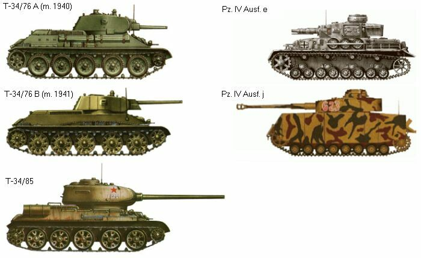
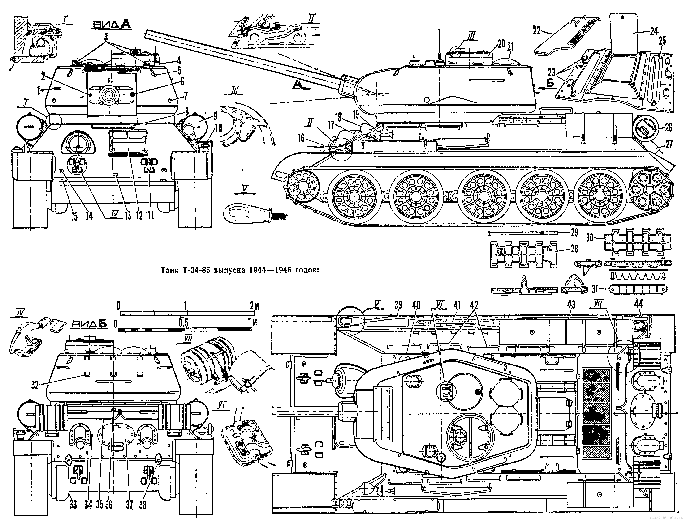
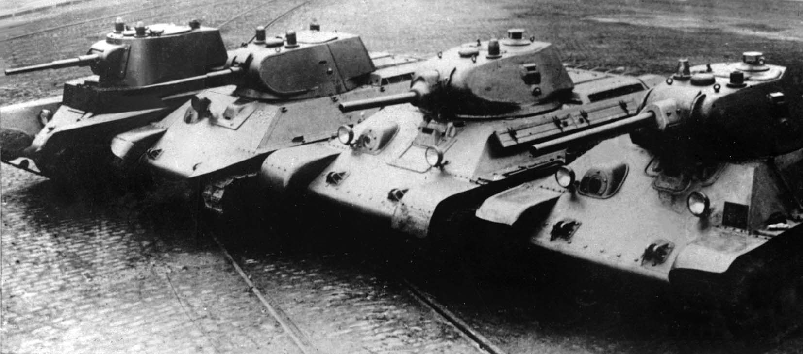
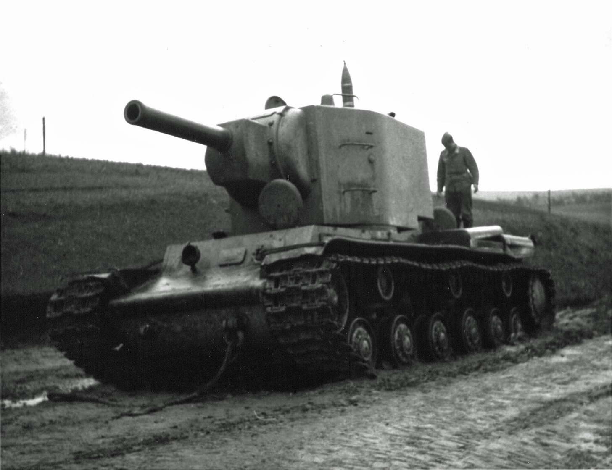

Tanks of WWII
Soviet Russia was in many ways one of the most important powers during WWII; Soviet casualties totaled half of all WWII casualties at over 25 million. By holding off the German invasion and forcing Germany to divert their forces to the east, Soviet Russia played an integral role in the allied victory of WWII.
Part of this success can be attributed to the superior armored tank force of Russia compared to other WWII powers; to this day, Russia possesses the strongest tank force of any world power.
The T-34 and T-34-85

The T-34-85 is one of the most recognizable tanks of WWII and in history. In service for the USSR from 1940 to the 1960s, it was manufactured in massive quantities in order to overpower Germany's Pz. IIIs and Pz. IVs used in the invasion of Russia. More than 35,000 T-34s and 48,000 T-34-85s were built.
The T-34 was successful largely because of their massive numbers, vastly outnumbering Nazi Germany's Panzer Divisions and any estimates or predictions by enemy intelligence; however, they also had many other advantages.
The frontal hull armor was only 40mm; however, it was sloped at 60 degrees, giving it an effective thickness of double that at 80mm. This made it very effective against and hard to be penetrated by many German light and even heavy tanks.
Above, from left to right:
- BT-7 (developed 1935)
- A-20 (prototype of the T-34, developed 1937)
- T-34 (1940 model)
- T-34 (1941 model)
The T-34 was able to be produced in large amount because many shortcuts were taken in the design of the tank. For example, the track links are locked together with pins, but instead of securing the pins with bolts, the T-34 was designed to have a plate that simply smashed the pins back into the tracks when they turned.
While these shortcuts allowed boosted production and lower maintenance later on the war against German invasions, they caused problems earlier on in the war in the Soviet invasion of Finland. Armor plates on T-34s were shodily bolted together and had many faults and seams; the Finns were able to take advantage of this by throwing molotav cocktails at the T-34s, and the burning fluid would often leak through the armor and knock out the crew.
The KV-2
The KV-1 and KV-2 are Soviet heavy tanks of WWII. Their extremely thick armor made them inpenetrable by German Pz. IIIs and Pz. IVs. Evne a single KV tank accompanied by infantry was often able to hold off German attacks, especially in the first year of the German invasion of Russia.